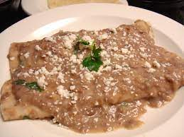

Enfrijoladas

Enfrioladas is a dish that is very simple to make and the Ingredients are not expensives to get.
Since the dish is very simple there are many things that you can add.
Ingredients
- corn torillas
- Beans
- Queso Fresco
- choice of oil
Steps to create
- The first step is cook the tortilla and make sure not to fry it just cook it in the oil and also cook the beans at the same time
- Second step is to smash the beans if not already smashed and get a plate and lay out the torillas on it
- Third step is to get a spoon of the beans and rub it on both side of the tortilla
- Finally you want to put cheese on the tortilla and roll it, After that push some beans over the rolled tortillas and add some more cheese
Main page